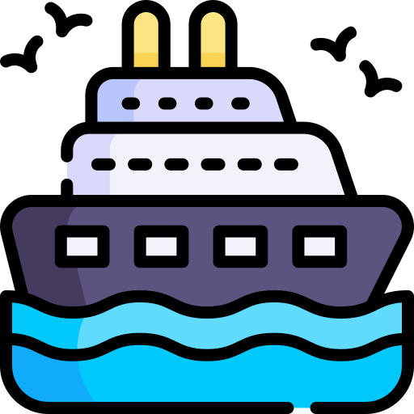
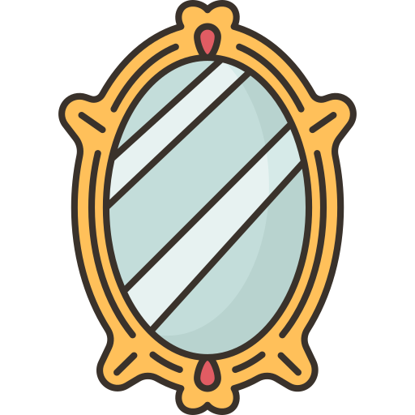

Digital and Public Humanities' project about To the Lighthouse
Atlas of Virginia Woolf's Works

The Voyage Out (1915)
La crociera
Night and Day (1919)
Notte e giorno

Jacob's Room (1922)
La stanza di Jacob
Mrs Dalloway (1925)
La signora Dalloway

Orlando: A Biography (1928)
Orlando
The Waves (1931)
Le onde
The Years (1937)
Gli anni
Between the Acts (1941)
Tra un atto e l'altro
To the Lighthouse (1927)
Gita al Faro